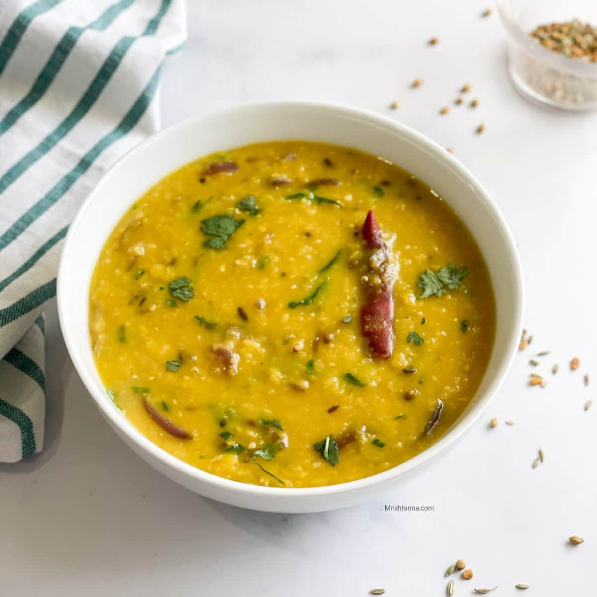

Maybe you came to this page looking for a vegetarian dish. Or maybe you know how to make Daal but just want to know how the bengali's do it. Or maybe, just maybe you came here to try a new recipe because the chicken curry was sooo good... Well whichever it is; you're at the right place.
A classic staple dish in asian cuisine in general. Everyone's kind of got their own twists and versions of Dhaal, you may see that Indians have it at a thicker consistency or maybe they use a variety of lentils.. Nonetheless, this recipe is still an undisputed classic comfort food.